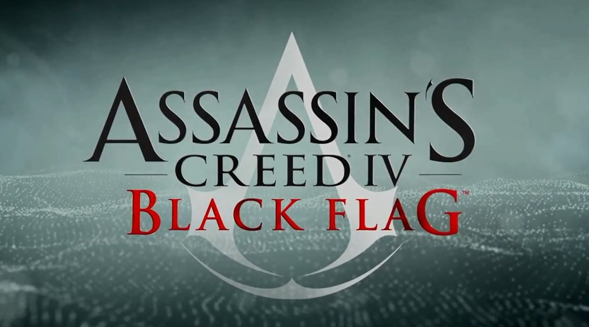

TITOLO: Assassin's Creed IV: Black Flag
SVILUPPO: Ubisoft Montreal, Ubisoft Annecy
DATA DI USCITA: 29 ottobre 2013 (PS3 e Xbox360), 19 novembre 2013(PC), 15 novembre 2013 (PS4), 22 novembre 2013 (Xbox One)
COLLOCAMENTO STORICO: Età d'oro della pirateria nei Caraibi
AMBIENTAZIONI: Caraibi
TRAMA:
Nel giugno del 1715, al largo di Cuba, il brigantino pirata Jacobite ingaggia uno scontro a fuoco con la fregata inglese HMS Intrigue. Grazie all'abilità come timoniere di Edward Kenway, la nave pirata riesce ad affondare l'imbarcazione nemica. Tuttavia, un uomo misterioso imbarcato sulla fregata inglese riesce a salvarsi dal naufragio e a salire sulla Jacobite, assassinandone il capitano. Prima che l'uomo possa attaccare anche Edward, la polveriera del brigantino esplode, scaraventando i due uomini fuori bordo. Edward raggiunge a nuoto la spiaggia di Capo Bonavista, dove poi arriva anche l'uomo misterioso, visibilmente ferito. Questo chiede ad Edward di aiutarlo a raggiungere L'Avana in cambio di una cospicua somma di denaro. Interessato solo al bottino, tuttavia, Edward prova a rapinare l'uomo, che decide di trovare rifugio nella foresta. Edward insegue l'uomo nella foresta e, dopo averlo raggiunto ed aver ingaggiato uno scontro con lui, lo elimina.
Perquisendone il corpo senza vita, Edward scopre che l'uomo non portava del denaro con sé, ma solo un misterioso cubo di vetro, alcune mappe ed una lettera firmata dal governatore di Cuba, Laureano Torres y Ayala. Grazie alla lettera, Edward scopre che l'uomo avrebbe ricevuto una cospicua ricompensa se avesse consegnato i documenti ed il cubo al governatore. Consapevole del fatto che i due uomini non si erano mai incontrati, Edward indossa le vesti dell'uomo e decide di recarsi a L'Avana per ottenere la ricompensa al suo posto. Dopo aver salvato il mercante Stede Bonnet da alcuni soldati inglesi che lo credevano un pirata, Edward ottiene da lui un passaggio verso L'Avana.
Nel presente, nell'anno 2013, un impiegato di Abstergo Entertainment, società sussidiaria di Abstergo Industries, viene fatto uscire dall'Animus in cui ha appena rivissuto un ricordo genetico di Edward Kenway ed accolto ufficialmente nel Progetto Campione 17 dal suo supervisore, Melanie Lemay. Dopo aver mostrato al nuovo assunto la struttura di Montréal ed avergli presentato il Chief Creative Officer, Olivier Garneau, ed il capo dell'IT, John, Melanie lo fa rientrare nell'Animus per fargli rivivere nuovi ricordi di Edward, indispensabili per la creazione di nuovi prodotti per l'intrattenimento. L'impiegato così ritorna nell'Animus per continuare ad esplorare i ricordi di Edward.
A L'Avana, Edward si reca alla villa del governatore, dove incontra Woodes Rogers e Julien Du Casse, anche loro lì per incontrare l'uomo. Dai loro discorsi, Edward comprende che Duncan Walpole, l'uomo misterioso di cui Edward ha preso l'identità, era intenzionato ad abbandonare l'Ordine degli Assassini per unirsi a quello dei Templari, di cui il governatore ed i due uomini sono membri. I tre uomini incontrano successivamente Torres, a cui Edward consegna i documenti ed il cubo di vetro. Parlando con i tre uomini, Edward comprende inoltre che gli oggetti consegnati al governatore sono necessari per accedere ad un luogo chiamato Osservatorio, in cui è custodita una tecnologia che permette di spiare qualunque uomo presente sul pianeta. Per accedervi è tuttavia necessario avere una goccia di sangue di un uomo chiamato Saggio, che è inoltre l'unico che conosca la posizione esatta del luogo misterioso. Intenzionato a sapere di più sull'Osservatorio ed ad incassare la ricompensa promessa, Edward accetta di incontrare nuovamente gli uomini il giorno dopo al porto, dove arriverà il Saggio, fatto prigioniero dai soldati spagnoli.
Il giorno successivo, Edward incontra al porto i Templari, che recuperano una goccia di sangue del Saggio. Durante il tragitto verso la villa del governatore, dove si sarebbe tenuto l'interrogatorio dell'uomo, i Templari vengono attaccati da un gruppo di Assassini, intenzionati a liberare il Saggio. Durante lo scontro, il Saggio dimostra di non voler collaborare né con i Templari né con gli Assassini, che vengono eliminati. Dopo aver condotto il Saggio nelle prigioni della villa, Edward riceve da Torres la ricompensa pattuita. Credendola tuttavia inadeguata, decide di non collaborare più con i Templari e di raggiungere l'Osservatorio da sé, convinto che possa essere una grande fonte di guadagno. Così, si introduce nella villa con l'intenzione di liberare il Saggio. Raggiunte le celle, Edward si rende conto che l'uomo è già fuggito e, sorpreso dai Templari, la sua vera identità viene scoperta. Catturato, viene così caricato sulla flotta del tesoro diretta in Spagna per poi essere consegnato ai Templari inglesi.
Sfruttando la tempesta in cui è bloccata la flotta, Edward ed un prigioniero di origine africana chiamato Adéwalé liberano un grande numero di pirati e rubano un brigantino chiamato El Dorado, con cui poi fuggono. Dopo aver deciso di tenere il brigantino per sé, rinominandolo Jackdaw, Edward fa rotta verso Nassau, città inglese divenuta un covo di pirati, dove intende iniziare una nuova vita dedicata ai saccheggi. Edward rincontra Benjamin Hornigold, Edward Thatch e James Kidd, vecchi amici intenzionati a far prosperare a Nassau una repubblica pirata libera dal giogo delle potenze coloniali europee. Per paura che la marina militare britannica attacchi Nassau per liberarla dei pirati, gli uomini decidono di catturare un vascello e di posizionarlo davanti al porto della città come prima difesa. Edward e Thatch pedinano così la El Arca del Maestro, nave spagnola comandata da Julien Du Casse, fino al suo nascondiglio di Great Inagua. Successivamente, Edward assassina Du Casse, reclamando poi per sé e la sua ciurma il suo nascondiglio presente sull'isola.
Nel presente, il neo assunto impiegato di Abstergo Entertainment viene convocato da Olivier Garneau nel suo ufficio. L'uomo chiede all'impiegato di concentrare le sue ricerche sul luogo chiamato Osservatorio, come gli è stato chiesto di riferirgli dai dirigenti di Abstergo Industries. Subito dopo, viene contattato da John, che gli chiede con una scusa di violare l'Animus di un collega e di consegnare poi i file ottenuti ad un corriere presente nell'atrio. L'impiegato rientra poi nell'Animus.
Nel marzo del 1716, Edward e Kidd, esplorando l'isola di Great Inagua, discutono delle straordinarie abilità sensoriali del primo. Successivamente, Kidd invita Edward nello Yucatan, dove avrà qualcosa da mostrargli riguardo l'Osservatorio, su cui sembra avere molte informazioni. Edward si reca a Tulum, covo degli Assassini, di cui l'amico è un membro. Lì, il loro Mentore, Ah Tabai, accoglie freddamente Edward a causa dell'aiuto che ha prestato ai Templari a L'Avana. Tuttavia, essendo Edward uno dei pochi ad aver visto il Saggio, chiede a Kidd di mostrargli un antico monumento Maya, stranamente raffigurante proprio le fattezze dell'uomo visto a L'Avana poco tempo prima. Successivamente, Edward aiuta gli Assassini a respingere un attacco portato dagli uomini dello schiavista Laurens Prins, giunto a Tulum grazie alle mappe vendute dal pirata ai Templari. Nonostante il suo aiuto, Edward viene cacciato da Ah Tabai, che non vuole avere nulla a che fare con un uomo egoista come lui.
Nel gennaio 1717, grazie a Charles Vane e Jack Rackham, Edward viene a sapere che Torres sta per trasferire un grosso carico di denaro da Cuba. Edward scopre successivamente che Torres ha intenzione di portare l'oro a Kingston per riscattare il Saggio, catturato dallo schiavista Prins. Edward si reca in Giamaica, intenzionato a chiedere nuovamente all'uomo informazioni sull'Osservatorio. Grazie all'aiuto di Kidd, in realtà una donna di nome Mary Read, Edward riesce ad assassinare Prins, ma non a catturare il Saggio, che fugge nuovamente.
Nel gennaio del 1718, mentre corre la voce che re Giorgio I d'Inghilterra voglia riprendere il controllo della colonia delle Bahamas offrendo ai pirati presenti il perdono per tutti i crimini commessi in passato, la città di Nassau viene colpita da una grave epidemia. Così, Edward e Thatch si prendono l'impegno di procurarsi dei medicinali per la città, che vengono infine recuperati a Charles-Towne nel maggio dello stesso anno dopo una settimana di embargo.
Nel frattempo, nel presente, John chiede un altro favore al nuovo impiegato di Abstergo Entertainment: violare la telecamera di sicurezza dell'ufficio di Olivier Garneau per spiare un incontro tra l'uomo, Melanie Lemay e Laetitia England. L'impiegato, sotto pressioni del tecnico dell'IT che minaccia di denunciare le sue attività illecite della settimana prima, viola il computer di Olivier Garneau e ruba dei file riservati, scoprendo inoltre che la Abstergo è la società di facciata dell'odierno Ordine dei Templari. Dopo la scoperta, l'impiegato ritorna nell'Animus.
Nel luglio del 1718, Woodes Rogers raggiunge Nassau in qualità di nuovo governatore delle Bahamas, offrendo ai pirati il perdono per i loro crimini. Mentre Hornigold sembra propenso ad accettare l'offerta, Edward fugge dalla città insieme a Vane e Rackham, sfondando il blocco navale inglese con un brulotto. Dopodiché, raggiunge Thatch ad Ocracoke, dove l'uomo ha intenzione di ritirarsi dopo aver accettato il perdono offerto dal re. Tuttavia, il covo viene attaccato dalla marina inglese e Thatch viene ucciso sotto gli occhi impotenti di Edward. L'uomo decide così continuare la sua ricerca del Saggio insieme a Vane e Rackham. Tuttavia, dopo l'abbordaggio di una nave di schiavisti su cui potrebbe essere imbarcato il Saggio, Rackham guida la ciurma in un ammutinamento contro Edward e Vane, che vengono abbandonati su un'isola deserta. Dopo mesi Edward riesce però a fuggire dall'isola, abbandonando Vane a sé stesso, ed a recuperare la sua nave.
Edward si reca a Kingston, dove pensa di trovare informazioni sulla nave di schiavi su cui è imbarcato il Saggio. Lì, scopre che Benjamin Hornigold si è unito ai Templari e che questi hanno inviato John Cockram e Josiah Burgess a Príncipe per catturare il Saggio. Così, Edward si dirige verso l'isola, dove assassina i due Templari, ottenendo la fiducia del Saggio, che si presenta ufficialmente come Bartholomew Roberts. L'uomo propone ad Edward un patto: condividerà con lui le ricchezze dell'Osservatorio se lo aiuterà ad ottenere ciò di cui ha bisogno. Edward così aiuta Roberts a recuperare alcune fiale contenenti delle gocce di sangue ed assassina per lui il suo vecchio amico Hornigold. Infine, Roberts condivide con Edward il contenuto dell'Osservatorio; al suo interno è custodito un misterioso manufatto in grado di mostrare ciò che vede il proprietario del sangue utilizzato per attivarlo. Tuttavia, recuperato l'oggetto, Roberts tradisce Edward e lo consegna alle autorità inglesi, che lo imprigionano a Port Royal.
Intanto, nel presente, l'impiegato è stato trasferito a sua insaputa in un bunker sotterraneo, dove verrà tenuto prigioniero fino a che non si riuscirà a comprendere chi sia il responsabile delle violazioni nei sistemi di sicurezza delle settimane precedenti. Facendo finta di volerlo aiutare a cancellare le prove che potrebbero portare i dirigenti a capire chi è il responsabile delle violazioni degli Animi, John tenta, invano, di fare in modo che una misteriosa entità prenda possesso del corpo del dipendente di Abstergo Entertainment. L'impiegato, scosso e un po' spaventato, torna così nella sua cella e rientra nell'Animus.
Dopo mesi passati nella prigione di Port Royal, nell'estate del 1720, Edward viene liberato da Ah Tabai, che richiede il suo aiuto per liberare Mary Read ed Anne Bonny, anche loro arrestate per atti di pirateria ma non ancora condannate a morte in quanto incinte. I due riescono a liberare Anne, ma non Mary, che muore tre le braccia di Edward. Disperato per la perdita della sua nave, di un'amica e del tesoro bramato per anni, Edward entra in una spirale di autodistruzione, finché un giorno rincontra Adéwalé. Il suo vecchio quartiermastro gli restituisce la Jackdaw e gli chiede di recarsi a Tulum. Lì, scopre che l'amico si è unito agli Assassini e, dopo aver compreso le sue motivazioni, decide di fare altrettanto per lenire le sue colpe nei loro confronti e per seguire una causa più onorevole della mera ricerca di ricchezze.
Addestrato dagli Assassini, dal maggio del 1721 Edward inizia la sua caccia ai Templari, che lo porterà a uccidere Woodes Rogers, Bartholomew Roberts e Laureano Torres. Recuperato dal pirata il prezioso manufatto trafugato anni prima dall'Osservatorio, Edward e gli Assassini lo riportano al suo posto. Dopodiché, sigillano la porta del tempio per impedire che qualcun altro possa appropriarsi dell'oggetto.
Nel presente, John fa uscire l'impiegato dall'Animus, mostrandosi apertamente per la prima volta. L'uomo, identico al pirata Bartholomew Roberts, rivela di essere uno dei Saggi, le reincarnazioni di Aita, il marito di Giunone. Poi, inietta un liquido nel corpo del dipendente di Abstergo Entertainment con l'intenzione di indebolirlo abbastanza da permettere alla moglie di prendere possesso del suo corpo. Tuttavia, l'uomo viene salvato dalle guardie di sicurezza, che uccidono John dopo aver fatto irruzione nel bunker sotterraneo. Assistito dai medici della Abstergo, il dipendente viene poi reintegrato nel suo posto di lavoro e ringraziato per il suo aiuto involontario dal barista Shaun e dal corriere Rebecca, in realtà membri dell'Ordine degli Assassini, che gli chiedono di continuare a collaborare con loro. L'impiegato, dopo aver vissuto questa esperienza, decide di tornare nell'Animus.
Leggendo la prima lettera di risposta giunta dall'Inghilterra dopo anni passati lontano da casa, Edward apprende della morte della moglie e di avere avuto da lei una figlia, Jennifer, nata pochi mesi dopo la partenza dell'uomo per i Caraibi. Così, nell'ottobre del 1722, il pirata, ormai Assassino, saluta i suoi vecchi amici ed accoglie a Great Inagua la figlia che non ha mai conosciuto, con cui poi ha intenzione di fare ritorno in Inghilterra. Edward passerà poi il resto della sua vita a Londra, dove conoscerà e sposerà una nuova donna, da cui poi avrà un secondo figlio, Haytham (Gran Maestro dell'Ordine dei Templari, padre di Connor Kenway, assassino americano, protagonista di Assassin's Creed III), dove poi potrà condurre una vita da gentiluomo, e da assassino.
Edward verrà assassinato da un gruppo di Templari mandati dal Gran Maestro dei Templari europei Reginald Birch (Presente in Assassin's Creed III) e sua figlia Jennifer sarà rapita (le vicende che seguono verranno poi raccontate nel libro Assassin's Creed Forsaken).
ARMI:
Lama celata: l'arma base di tutti gli assassini, utile per uccidere furtivamente senza attirare l'attenzione delle guardie.
Spada: una coppia di spade, sciabole o fioretti, efficaci negli abbordaggi e nei combattimenti.
Pistola: arma da fuoco di media potenza e portata,a colpo singolo. Potenziando la "borsa di proiettili" si potrà portarne fino a un massimo di 30, mentre avanzando nel gioco Edward potrà disporre di quattro pistole (mentre all'inizio potrà disporre solo di due pistole).
Cerbottana: quest'arma può utilizzare sia dardi soporiferi che i dardi del furore. I primi addormentano il bersaglio per un breve lasso di tempo (aumentabile di 20 secondi grazie ai potenziamenti), mentre gli ultimi fanno cadere in stato di pazzia e furia la guardia colpita, la quale attaccherà i suoi compagni e difatto evitando a Edward di entrare in azione per eliminare direttamente i nemici. Quando l'effetto furia finirà, la guardia si accascerà a terra morta. Data la loro peculiarità, è consigliabile sparare i dardi del furore su guardie forti come granatieri, capitani o comandanti i quali avranno maggior probabilità di eliminare gli ex-alleati di livello soldato. Entrambe le due tipologie di dardo possono essere sparate anche quando si è nascosti nei cespugli o tra le frasche, ma non se ci si trova nei pozzi o nelle palle di fieno.
Moschetto: quest'arma può essere utilizzata raccogliendola dai bersaglieri uccisi e possiede il doppio della portata e del danno della pistola.
Dardo da corda: Una specie di piccolo arpione legato a una corda e posizionato nei bracciali, può essere scagliato contro un nemico per impiccarlo (se Edward si trova in un punto sopraelevato o rialzato) oppure, se si è a terra, consente di trascinare il nemico verso di sè, disarmandolo e facendolo cadere a terra, dando così a Edward l'occasione giusta per finirlo con un colpo. Verrà donato a Edward da Ah Tabai verso la fine della storia, come segno di rispetto dopo le iniziali incomprensioni.
Bomba fumogena: Una delle prime armi disponibili, sono piccole sfere contenenti fumo che si attivano non appena sono gettate a terra. La nube che scatenano impedisce ai nemici di vedere entro il raggio d'azione del fumo, mentre Edward non risentirà degli effetti e potrà affondare i suoi colpi sui nemici con estrema facilità, eliminandoli in genere con un solo affondo.
Pugnali da lancio: Un piccolo coltello da lancio, leggero quanto efficace. È in grado di annientare un nemico vicino con un solo attacco e senza causare eccessivo rumore.
ARMI NAVALI:
La Jackdaw ha molti sistemi per provocare danni: può usare le normali palle di cannone sparando con i cannoni da bordata, da ravvicinato si possono usare colpi potenti in grado di perforare anche gli scafi più resistenti, con i cannoni da prua spara palle incatenate in grado di rallentare il nemico, dietro può lanciare barili infiammabili per impedire al nemico di inseguirla.Inoltre sono molto efficaci gli attacchi ravvicinati con lo sperone e quelli a distanza con il mortaio. Durante i combattimenti,come durante la normale navigazione, possono subentrare altri fattori come vento, tempeste, nebbia, pioggia che rendono la sfida più difficile: in effetti onde anomale o tornado possono causare moltissimi danni. Per evitare troppi danni bisogna ordinare alla ciurma di piegarsi quando il nemico attacca o in presenza di un'onda anomala. I potenziamenti per la Jackdaw sono essenziali e non è consigliabile entrare in conflitto con navi di grandi dimensioni senza una nave adeguata.
DLC: "Grido di libertà", "Aveline", "Crociato e Fiorentino", "Pirati Illustri", "Vascello della Morte, "L'ira di Barbanera, "Gilda dei Briganti" "Nave Kraken".